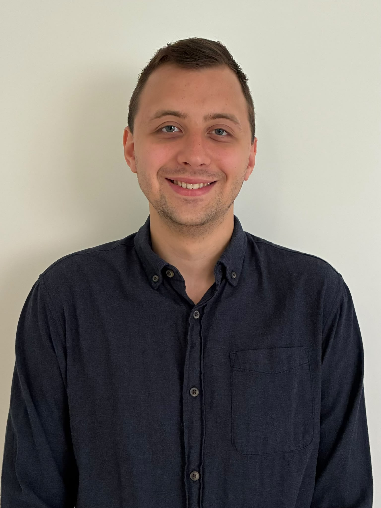

Welcome to my small page, where I describe my interests and the experiences that led me here.
Research Projects
Scientific Publications
Countries of Experience
Languages Spoken
I am currently studying Chemical Engineering and Biotechnology at Aalborg University. My experience spans laboratory research, microbiology, analytical chemistry, process optimisation, reaction kinetics and data analysis. I enjoy applying scientific principles to solve real industrial problems and create practical process improvements.
AAU, Esbjerg, Denmark
August 2024 – Expected July 2027
BAA, Aarhus, Denmark
August 2021 – Juanuary 2024
University of Melbourne Bio21 Institute
2023 – 2024
- Collaborated with a multidisciplinary team of ~10 researchers and PhD students at the Bio 21 Institute to support daily laboratory operations.
- Executed experimental protocols and maintained quality standards for ~10 daily reactions and sample handling independently.
- Upheld quality assurance standards and safety regulations and maintained laboratory equipment across all laboratory activities.
- Conducted self-directed research on protocol adjustment, discovering and correcting measurement errors in the Fuchsin assay through my own calculations, achieving a 98% correlation coefficient as the benchmark for reliable results.
2021 -2022
- Improved efficiency of goods handling through accurate sorting and organisation of inventory.
- Maintained a strong safety record while operating forklifts and handling warehouse materials.
- Supported smooth warehouse operations by ensuring timely product movement and storage.
- Developed practical skills in logistics, inventory management, and workplace safety.
2021 – 2022
- Delivered food orders safely and efficiently while maintaining excellent customer service.
- Managed delivery schedules and optimised routes to ensure timely deliveries.
- Demonstrated reliability, independence, and strong time-management skills.
2023 – 2024
- Supervised restaurant operations and coordinated staff during service.
- Ensured high customer satisfaction through efficient service and problem resolution.
- Trained new employees and supported team performance.
2024 – Present
- Prepared and cooked authentic pizzas according to restaurant standards and recipes.
- Managed dough preparation, ingredient quality control, and food storage.
- Maintained high standards of food safety, hygiene, and kitchen cleanliness.
- Worked efficiently in a fast-paced environment during peak service hours.
- Coordinated with kitchen and front-of-house staff to ensure timely order delivery.
- Monitored stock levels and assisted with inventory management.
- Ensured consistent food quality and customer satisfaction.
The project aimed to find bacteria that can degrade homotaurine as a sulfur substrate. My co-supervisor (Dr Burchill) and I visited different ponds and soil sites near the University of Melbourne to collect random samples, hoping to isolate this target bacterium. After some time, I successfully isolated the bacteria, so after DNA extraction, we sent the results to proteomics colleagues to identify the species. Meanwhile, I performed enzyme kinetics analysis for the homotaurine substrate by optimising pH and buffer composition. I also monitored bacterial growth and performed sulfate and sulfite analyses.
The project aimed to find optimal conditions for high-rate enzymatic reaction. As mentioned above, I also performed enzyme kinetics, but this time for the DHPS substrate by optimising pH and buffer composition.
This project examined how different pump types affect shear forces on fungal suspensions. My group and I received a prototype from VentriLabs: a membrane-based, low-shear-force pump. Its effect on the fungal suspension was aimed to be lower than that of the peristaltic pump, which is considered a medium-to-high shear-force pump. Thus, image recognition was used to monitor pellet sizes over time, and a statistical test was used to assess deviations among the samples.
This project focused on fouling formation in refineries where crude oil is delivered from upstream and formaldehyde-based scavengers are used. My group and I aimed to develop a reagent that could prevent this solid formation, which would ultimately reduce the cost of refineries' physical cleaning and maintenance. Moreover, the solid is toxic and hazardous to people and the environment, so our plan must reduce its environmental and health impact.
I started to play padel during my bachelor's degree in Esbjerg. I loved the sport from the first minute I played it, as it has tennis features I enjoy and an unusual playground for my sport experience.
Every summer vacation, I love playing beach volleyball for fun with my friends, family, and new people I meet there. I enjoy volleyball because it involves more people and is an interesting competition.
Running keeps me active and builds my endurance. My goal is to run a marathon one day.
One of my favourite sports. I played at the national division level in Moldova (BK BASCO) for one year. After high school, I moved to Denmark for studies and joined Bakken Bears (2nd division), where I played for two years.
My most played sport; I played professionally until I moved to Denmark for my AP degree. I have participated in many international competitions (2015 World Games of Young Compatriots, Sochi, Russia; 2019 Cup of Buzau, Romania) and national competitions (Balti Open, Chisinau national competition).
Travelling is one of the most important parts of the vacation. I love history, read historical books, and watch a lot of documentaries, so seeing places in person makes the history in books feel real.
While working in different restaurants, I took tips and learned techniques for cooking special dishes. Thus, I like to repeat it at home so I can eat at home like in a restaurant.
Email: anasta24@student.aau.dk
Phone number: + 45 91 11 65 93